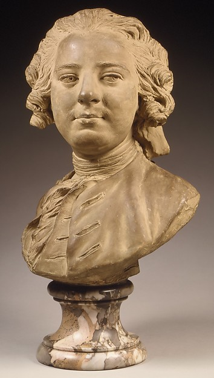

Bust of a Man, Lemoyne the Younger, about 1745–50. Terracotta, buff wash.
Nobody knows who he was. The sculptor gave him one eye a little lower than the other, and the corner of a mouth that has just been told something.
Clay does not wink. It was wet, and a thumb pressed once beside the eye, and then it was fired, and the thumb stayed.
So for two hundred and eighty years he has been in the middle of a joke, and the joke is not in the clay, and the person who told it is you, standing there, and you did not say anything.
Go on. Say what you said. He is still waiting to be sure.